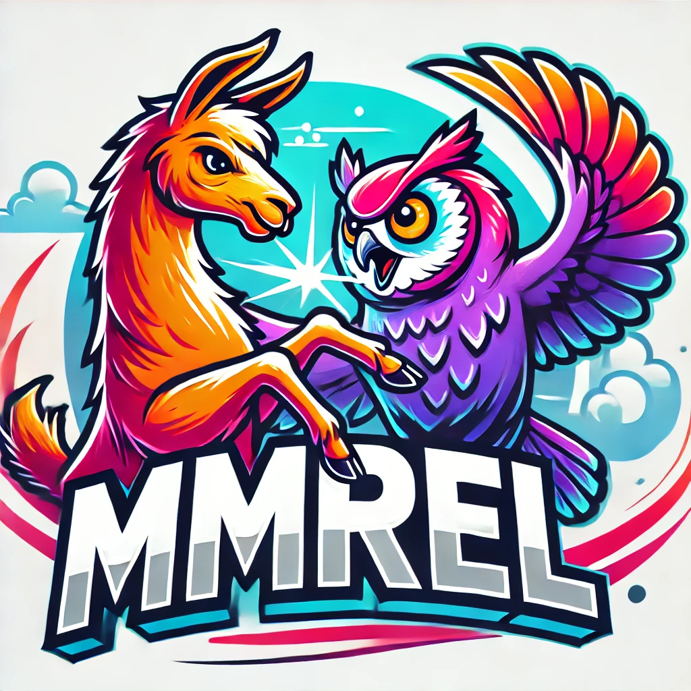

MMRel: A Relation Understanding Benchmark in the MLLM Era
arXiv 2024
|
Jiahao Nie *
Nanyang Technological University |
Gongjie Zhang *
Alibaba DAMO Academy |
Wenbin An
Xi'an Jiaotong University |
|
Yap-Peng Tan
Nanyang Technological University |
Alex C. Kot
Nanyang Technological University |
Shijian Lu
Nanyang Technological University |